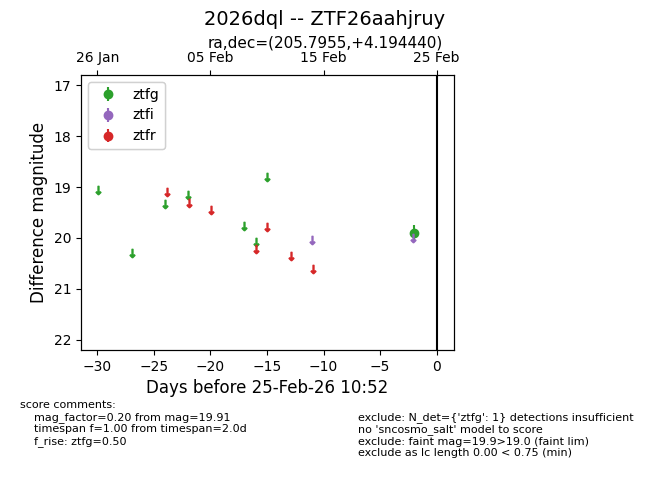
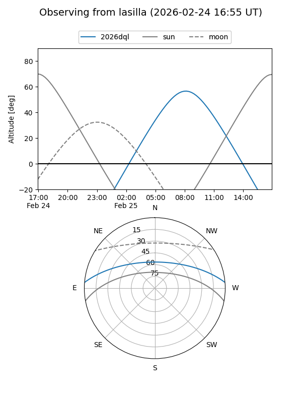
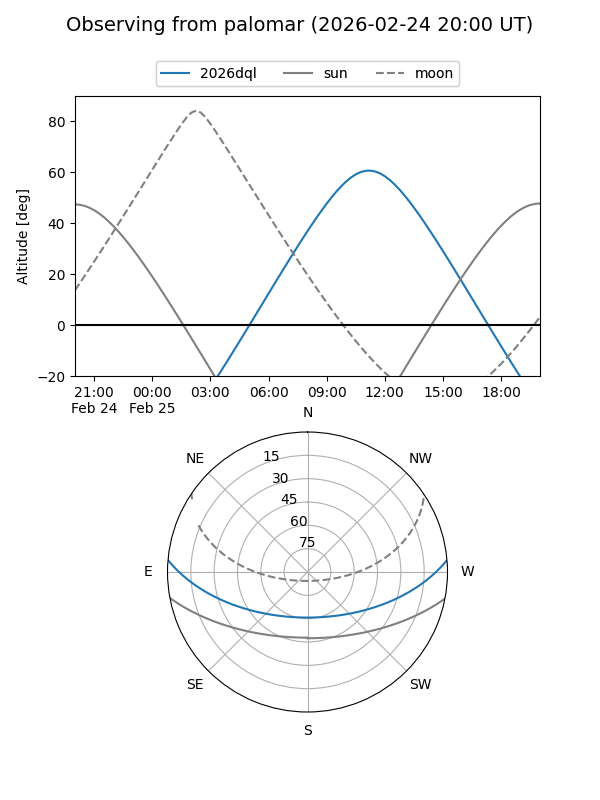

2026dql
Target 2026dql at 2026-02-25 10:53
Aliases and brokers:
FINK: link
Lasair: link
ALeRCE: link
TNS: link
YSE: link
alt names
ZTF26aahjruy (ztf,fink_ztf)
2026dql (tns,yse)
Coordinates:
equatorial (ra, dec) = 205.7955,+4.19444
equatorial (HMS+DMS) = 13:43:10.92,+04:11:39.98
galactic (l, b) = (333.4915,+63.95230)
Flags:
Photometry:
last ztfg=19.91
1 ztfg detections
Lightcurve

Visibility


Additional plots